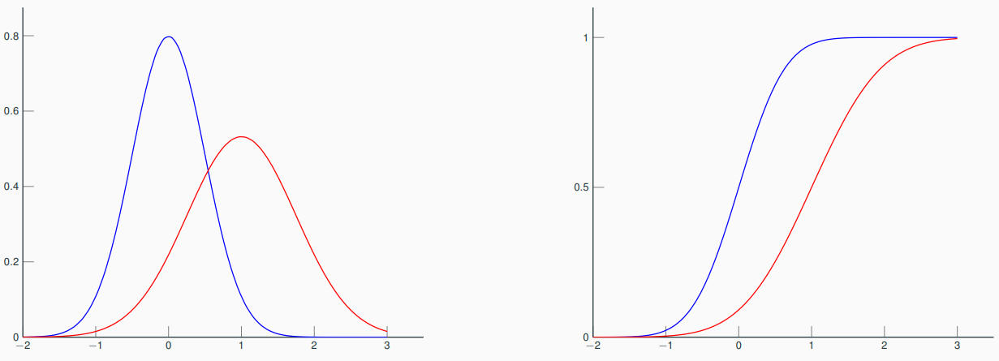
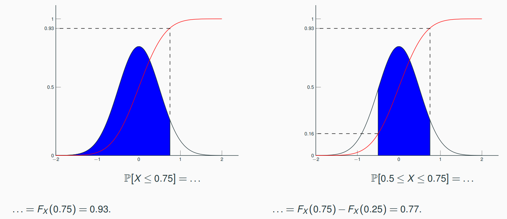

2. Basics of probability¶
Variable vs. random variable¶
Variable¶
A variable is the property of an object resulting from an experiment. e.g. the size of a person where the object is the medical check-up and the experiment is the patient consultation (the patient's shoes are not a variable but a parameter).
Warning
A variable is not a parameter. By definition, a variable varies while a parameter is fixed.
Quantitative variable:
- Discrete variable - A variable with discrete values, e.g. building floor.
- A continuous variable - A variable with continuous values, e.g. building height.
Qualitative variable:
- Nominal variable - A variable with nominal values, e.g. curry dish.
- Ordinal variable - A variable with ordinal values, e.g. spice level.
Random variable¶
A random variable is the property of an object resulting of a random experiment, e.g. the size of an adult person among a given population.
Random experiment¶
A random experiment is a real-world process whose state is random, e.g. obtaining the monthly water requirements per hectare [mwrph] (= the real-world process) of a field (= the state) in the south-west of France (= randomness).
A random experiment can be modelled by a probability space \((\Omega,\mathcal{F},\mathbb{P})\) where
- the population \(\Omega\) is the set of all possible outcomes of the experiment, a.k.a. sample space or possibility space, e.g. the mwrph of all the fields of the SW of France,
- an element \(\omega\), a.k.a. realization \(\omega\), is any element of the population \(\Omega\), e.g. the mwrph of a particular field in the SW of France,
- an event \(A\) is a set of possible elements, subset of the population \(\Omega\), the set of all events is noted \(\mathcal{F}\), e.g. the mwrph of fields of more than 500 hectares in the SW of France,
- the probability \(\mathbb{P}\) is the measure of the likelihood that an event happens, e.g. the mwrph of the field of the Dupont family at Joli-Village-Sur-Garonne exceeds the one of 2020. \(\mathbb{P}\) is an application from \(\Omega\) to \([0,1]\) such that \(\mathbb{P}(\Omega)=1\) and \(\mathbb{P}(\cup_{i\geq 1}A_i)=\sum_{i\geq 1}\mathbb{P}(A_i)\) iff \(\forall i\neq j, A_i \cap A_j=\emptyset\).
Sampling¶
A sample is an observation of the random variable \(X\) over the population \(\Omega\). The rest of the population remains unknown.
Notations:
- \(X\) - Random variable
- \(x\) - Observed value of the random variable \(X\)
- \(X^{(i)}\) - The \(i^{\text{th}}\) observation of the random variable \(X\).
- \(x^{(i)}\) - The \(i^{\text{th}}\) observed value of the random variable \(X\).
Warning
An observation is a random variable, unlike an observed value.
Probability distribution¶
Cumulative distribution function (CDF)¶
- Discrete variable: \(F_X(x)=\sum_{u\in\mathcal{X},~u\leq x}\mathbb{P}[X=u]\)
- Continuous variable: \(F_X(x)=\int_0^xf_X(u)du\)
Properties:
- non-decreasing
- right-continuous
- \(\lim_{x\rightarrow -\infty}F_X(x)=0\)
- \(\lim_{x\rightarrow +\infty}F_X(x)=1\)
Probability density function (PDF)¶
If there is a positive and integrable function \(f_X\) such that
then
where
Properties:
- \(\forall x\in\mathcal{X},~f_X(x)\geq 0\)
- \(\int_{\mathcal{X}}f_X(x)=1\)
- \(\lim_{x\rightarrow \pm \infty} f_X(x)=0\)
Example
Two normal (a.k.a. Gaussian) distributions:
| color | mean | standard deviation |
|---|---|---|
| blue | 0 | 0.5 |
| red | 1 | 0.75 |
Below the PDF on the left and the CDF on the right.

Below the relation between CDF and PDF.
